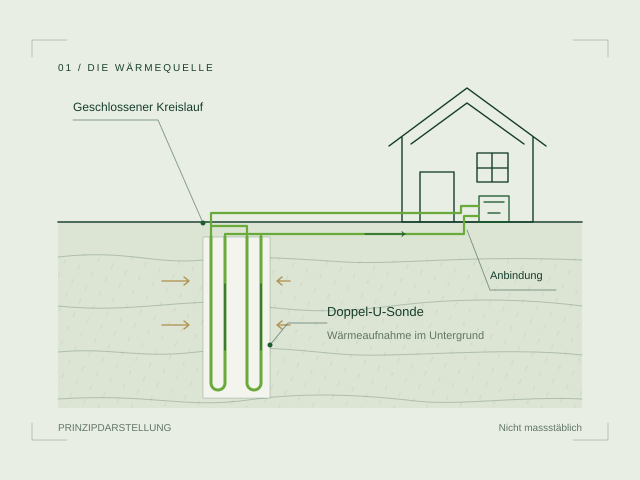
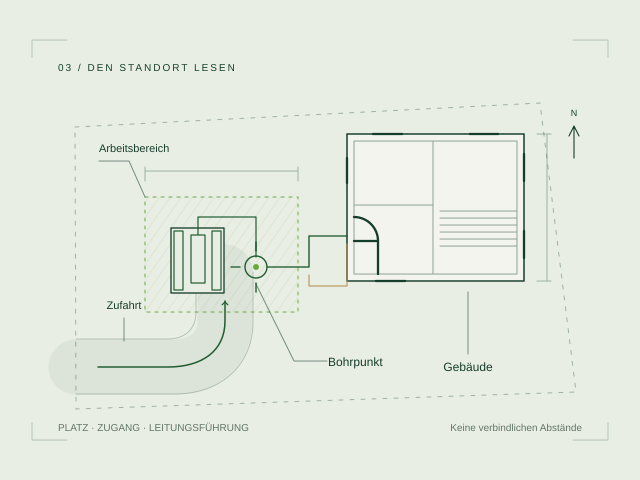

Erdsondenbohrung
DIE WÄRMEQUELLE ERSCHLIESSEN
Eine Verbindung
zur Erdwärme.
Im Untergrund liegt eine mögliche Energiequelle für Ihr Gebäude. Die Erdsondenbohrung schafft den Zugang dazu. Eine Sonde transportiert die aufgenommene Wärme in einem geschlossenen Kreislauf zur Wärmepumpe. Standort, Wärmebedarf und Gebäudetechnik werden zusammen betrachtet; Umfang und Zuständigkeiten werden im Projekt vereinbart.

GUT ZU WISSEN
Ein Überblick.
Gesetzliche Vorschriften
Die Bewilligung und die Auflagen richten sich nach dem Kanton und dem Standort. Vor der Ausführung werden die erforderlichen Freigaben geklärt. Eine Eignungskarte bietet erste Orientierung, ersetzt aber keine Bewilligung.
Standortabklärung
Geologie, Grundwasserschutz, Zufahrt und Platzverhältnisse bestimmen die Möglichkeiten auf Ihrem Grundstück. Wärmebedarf und Eigenschaften des Untergrunds bilden die Grundlage für Anzahl und Länge der Sonden. Auch Werkleitungen und die Anbindung ins Gebäude werden berücksichtigt.
Der Ablauf
Nach Planung und Bewilligung wird der Bohrplatz eingerichtet und die Bohrung ausgeführt. Anschliessend folgen Sondeneinbau, Prüfung und Hinterfüllung. Die Verbindungsleitungen führen zum Gebäude; die Anbindung und Inbetriebnahme werden mit der zuständigen Gebäudetechnik abgestimmt.
